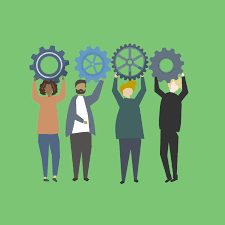
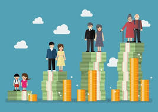
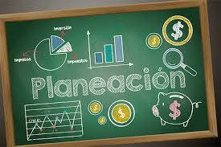
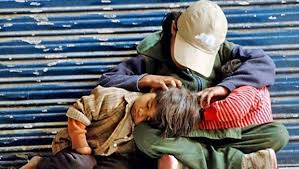
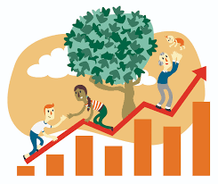
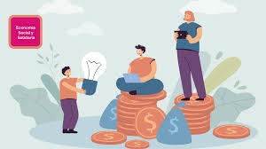

Retos 26-30
Tema no.26 Administración: Etapas del proceso administrativo
Definicion breve: El proceso administrativo se compone de cuatro etapas fundamentales:
1. Planeación: se fija los objetivos y se establecen los planes para alcanzarlos.
2. Organización: Se estructuran los recursos y tareas para ejecutar los planes.
3. Dirección: Se guía y motiva al personal para cumplir con los objetivos.
4. Control: Se revisan los resultados y se corrigen errores respecto al plan.
Como se aplica en la vida real: En una empresa, la administración permite planear metas, organizar equipos, dirigir tareas y controlar resultados para mejorar la eficiencia y cumplir objetivos.
También se aplica al organizar eventos, administrar un hogar o coordinar actividades escolares.
Con que temas se relaciona y por que: Administración y Gestión de proyectos
La gestión de proyectos aplica directamente el proceso administrativo, ya que requiere planear, organizar, dirigir y controlar cada etapa del proyecto.
#
Tema no.27 La gestión de proyectos
Definicion breve: La gestión de proyectos es el conjunto de conocimientos, habilidades, herramientas y técnicas para planificar, ejecutar y controlar proyectos. Sus etapas clave son:
1.Inicio: Definición de proyecto y sus objetivos.
2.Planificación: Establecimiento de cronogramas, presupuesto, recursos y riesgos.
3.Ejecución: Implementación del plan con supervisión constante.
4.Monitoreo y control: Seguimiento del avance y ajustes necesarios.
5.Cierre: Evaluación final, entrega de resultados y lecciones aprendidas.
Como se aplica en la vida real: Cuando alguien construye una casa, lanza un producto o realiza una campaña, aplica gestión de proyectos para planificar tiempos, recursos y costos.
Ayuda a evitar errores, cumplir plazos y lograr resultados concretos.
Con que temas se relaciona y por que: Gestión de proyectos y Planeación financiera
Todo proyecto necesita una buena planeación financiera para definir presupuestos, controlar gastos y asegurar la viabilidad económica del plan.

#
Tema no.28 Planeación financiera: etapas de la vida financiera: plan de metas.
Definicion breve: La planeación financiera consiste en organizar el dinero para alcanzar metas personales o familiares. Se basa en las siguientes etapas:
1.Inicio de la vida laboral: Ahorro inicial, creación de fondo de emergencias, control de gastos.
2.Crecimiento profesional y familiar: Inversiones, compra de bienes (como casa), protección con seguros.
3.Consolidación: Reducción de deudas, acumulación de patrimonio.
4.Jubilación: Uso del capital acumulado para mantener el nivel de vida.
5.Plan de metas: Es fundamental establecer objetivos financieros claros a corto, mediano y largo plazo, definir plazos y estrategias para alcanzarlos.

Como se aplica en la vida real: Una persona que ahorra para comprar un coche o pagar su universidad necesita definir metas, controlar gastos e invertir bien su dinero.
La planeación financiera permite tomar decisiones responsables en cada etapa de la vida.

Con que temas se relaciona y por que: Planeación financiera y Economía solidaria
La economía solidaria promueve una planeación financiera responsable y colectiva, donde los recursos se organizan para beneficiar a todos, no solo al individuo.
29. Economía de comunión ↔ 30. Economía solidaria
Ambas proponen una economía más humana y justa, basada en la solidaridad, la equidad y el bienestar común en lugar del lucro individual
#
Tema no.29 La economía de comunión como alternativa de una mejor sociedad.
Se basa en:
1.Empresas con fines sociales y solidarios, no solo de lucro.
2.Distribución de ganancias en tres partes: reinversión, ayuda a necesitados y formación cultural.
3.Promueve una economía al servicio de la persona, donde la comunión y la fraternidad son principios rectores.
4.Busca reducir la desigualdad y generar un cambio cultural en el mundo empresarial.
Aplicación en la vida real: Una empresa que dona parte de sus ganancias, cuida a sus empleados y promueve la igualdad está aplicando la economía de comunión.
Se centra en compartir, crear comunidad y construir una economía más humana.

Con que temas se relaciona y por que: Economía de comunión y Economía solidaria
Ambas proponen una economía más humana y justa, basada en la solidaridad, la equidad y el bienestar común en lugar del lucro individual.
#
Tema no.30 Economía solidaria
La economía solidaria es un modelo que pone a las personas y al bien común en el centro de la actividad económica. Sus características son:
1.Propiedad colectiva o comunitaria (cooperativas, asociaciones).
2.Participación democrática en la toma de decisiones.
3.Prioridad a las necesidades humanas sobre el lucro.
4.Redes de producción, consumo y financiamiento solidario.
5.Fomenta valores como la equidad, la solidaridad, la justicia y la sostenibilidad.

Como se aplica en la vida real: Se aplica cuando las personas crean cooperativas, bancos comunitarios o redes de trueque para cubrir necesidades sin fines de lucro.
Fomenta el trabajo colectivo, la equidad y el apoyo mutuo en comunidades.

Con que temas se relaciona y por que: Economía solidaria y Administración
En organizaciones solidarias como cooperativas, se usa el proceso administrativo para coordinar recursos y personas de manera democrática y eficiente.